Presque tous venaient de la même chose : l'outil de peinture repeignait chaque morceau séparément (pattes, queue, ailes). D'où des pattes d'une autre couleur, des queues bleues, des jointures visibles et des ailes mal posées.
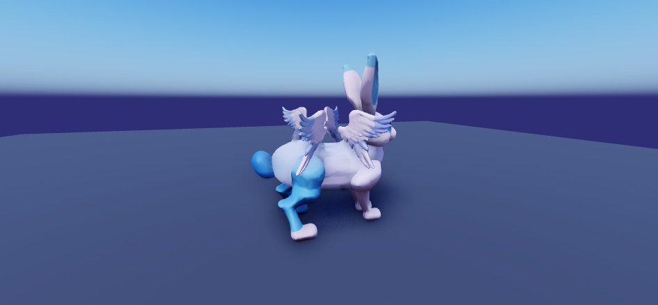
Avant : patte et queue bleues, ailes en vrac
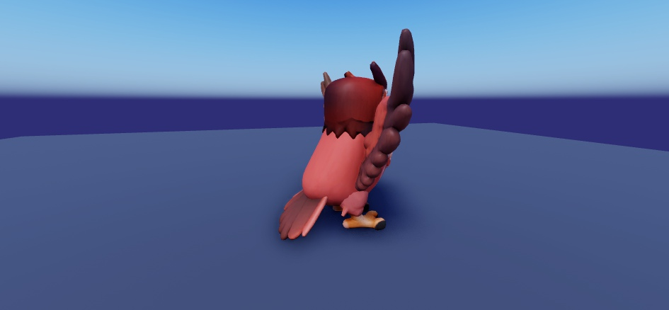
Avant : ailes d'une autre teinte que le corps
Jusqu'ici, la créature était coupée en morceaux rigides qui pivotent, d'où le trou à l'épaule. Maintenant, c'est une seule peau avec 26 os : dos, cou, tête, queue en 3 segments, 4 pattes à 3 os (cuisse, canon, sabot) et ailes à 3 os. La peau se plie autour des articulations, comme un vrai animal. Le modèle a été préparé dans Blender puis importé dans Studio tout seul, en pilotant la souris.
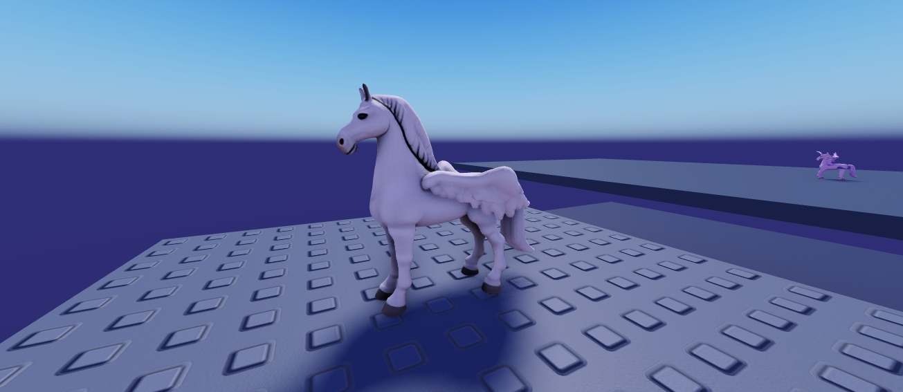
Ailes repliées le long du flanc : plus aucun trou à l'épaule
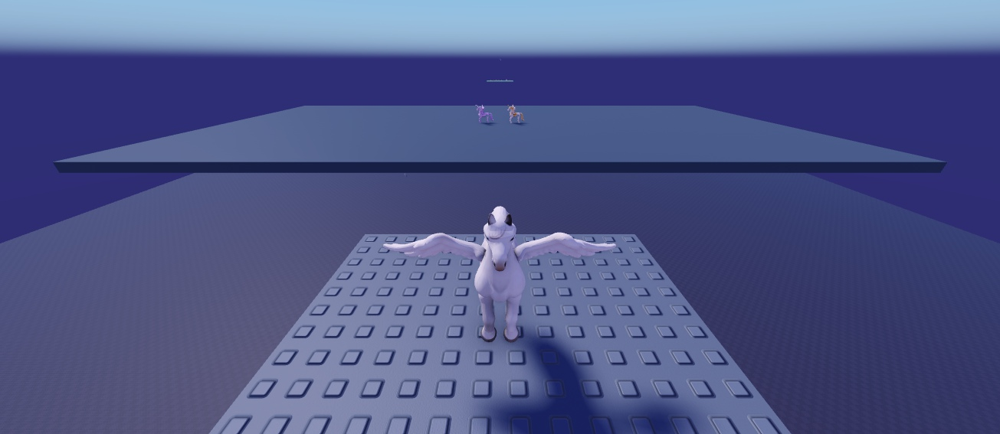
En vol : ailes à l'horizontale
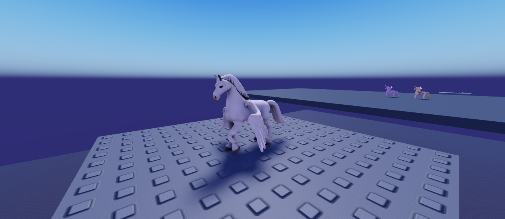
Patte avant levée et pliée au genou, la peau suit
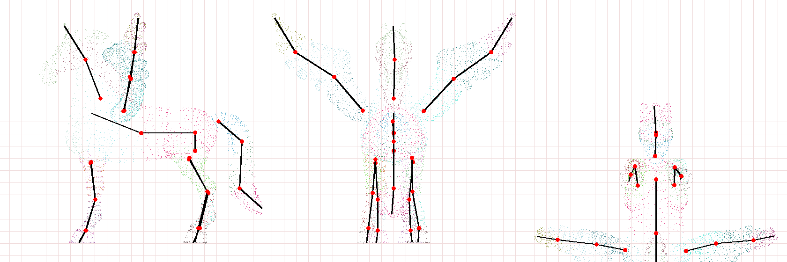
Le squelette calculé (profil, face, dessus) ; chaque couleur = la zone de peau d'un os
Ce que ça change : les 5 chevaux ailés ont la même forme, donc un seul squelette pour les 5, seule la texture change. Les animations (marche, galop, battement d'ailes, queue, tête) deviennent beaucoup plus naturelles. Prochaine étape si tu es d'accord : brancher ces modèles à os dans le jeu (création des créatures + animations), puis faire de même pour les autres familles (chevaux sans ailes, lapins, loups, oiseaux…).
Pégase des Nuages, Pégase d'Or, Alicorne et Licorne Divine utilisent maintenant exactement le même corps, la même tête et les mêmes ailes que le Pégase blanc que tu as validé. Seules les couleurs changent. L'Alicorne et la Licorne Divine ont reçu leur corne (plus courte qu'avant). Les croupes sont propres (aucun symbole).
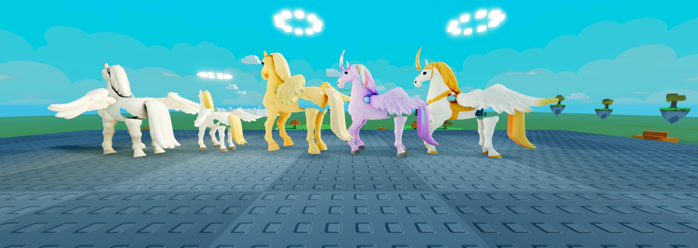
Au repos, de gauche à droite : Pégase · Pégase des Nuages · Pégase d'Or · Alicorne · Licorne Divine
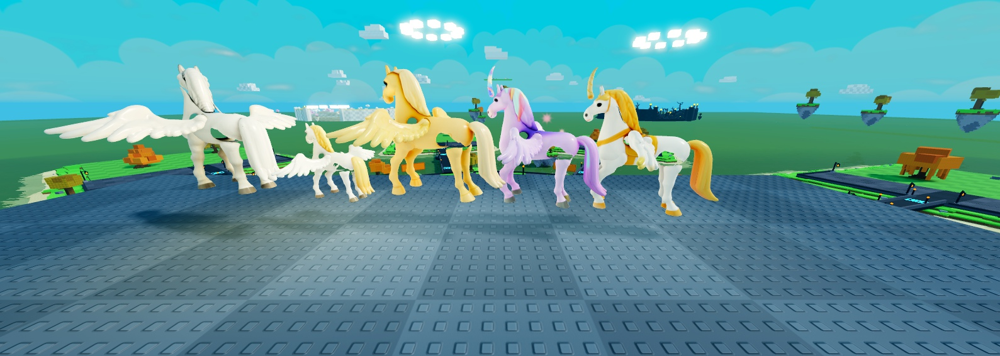
En vol, de côté (pendant un battement)
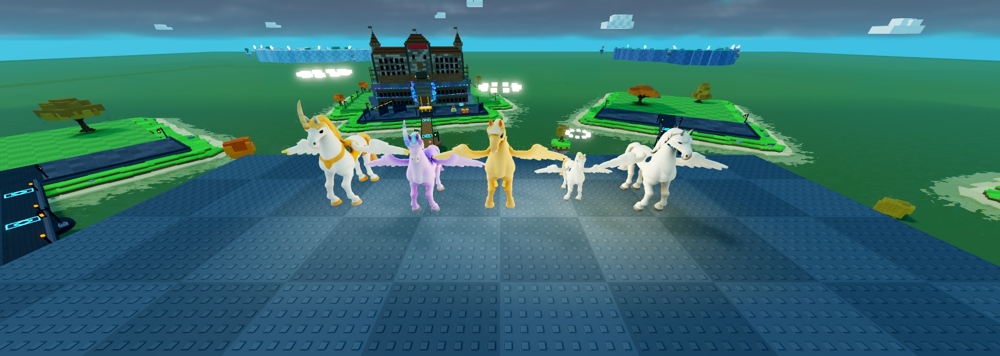
En vol, de face : ailes à plat, comme le Pégase validé
À noter : le Pégase des Nuages paraît plus petit parce que sa taille d'espèce est plus petite (c'était un monstre de zone), pas à cause du modèle. Je peux l'agrandir si tu veux. Le petit trou à l'épaule est encore à boucher.
Les chevaux difformes venaient d'un bug d'export : en jeu, chaque morceau (tête, pattes, ailes) était retourné à l'envers. C'est corrigé. Et je repars du pégase blanc d'origine (celui que tu as aimé, avec ses yeux), sans le repeindre.
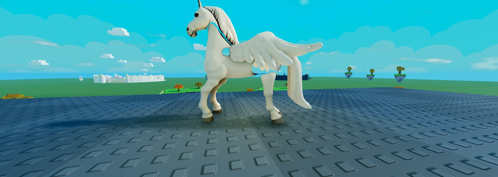
Au repos : aile couchée le long du dos, pointe vers l'arrière
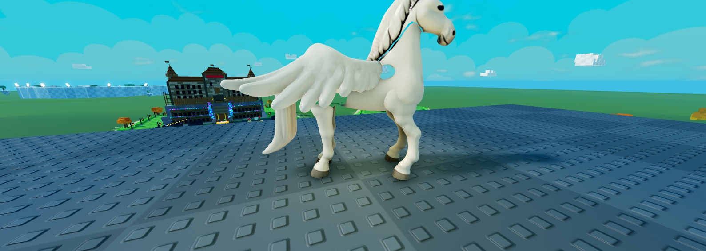
Au repos, autre côté
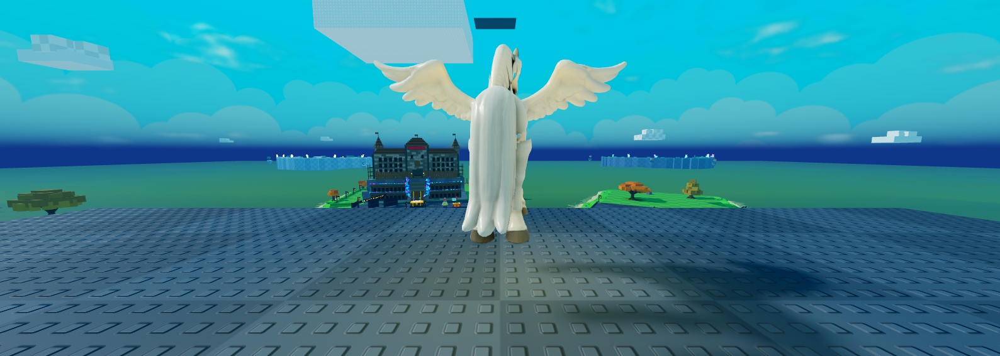
En vol (corrigé) : ailes à l'horizontale, battent autour de l'horizontale
Petit défaut restant : un petit trou clair à l'épaule, là où l'aile est découpée (je le boucherai). Si ce pégase te va, je fais les 4 autres (Nuages, Or, Alicorne, Divine) sur exactement ce modèle, en changeant seulement les couleurs.
Tu avais raison : les ailes que j'avais « collées » sur les chevaux flottaient, partaient du mauvais endroit et n'avaient pas la bonne taille. Elles sont maintenant générées avec le cheval (un seul modèle de pégase : les ailes poussent vraiment des épaules), puis séparées pour être animées.
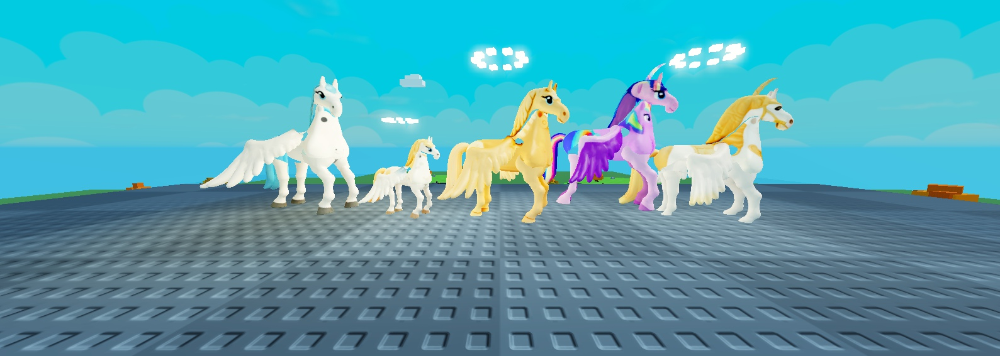
En jeu, au repos : Pégase · Pégase des Nuages · Pégase d'Or · Alicorne · Licorne Divine, ailes repliées le long du flanc
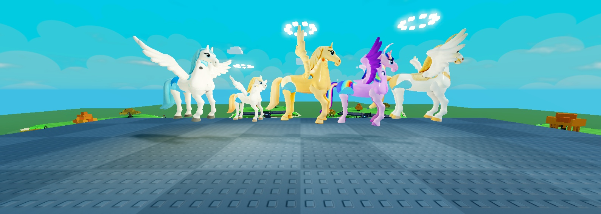
En jeu, en vol : ailes déployées, battements
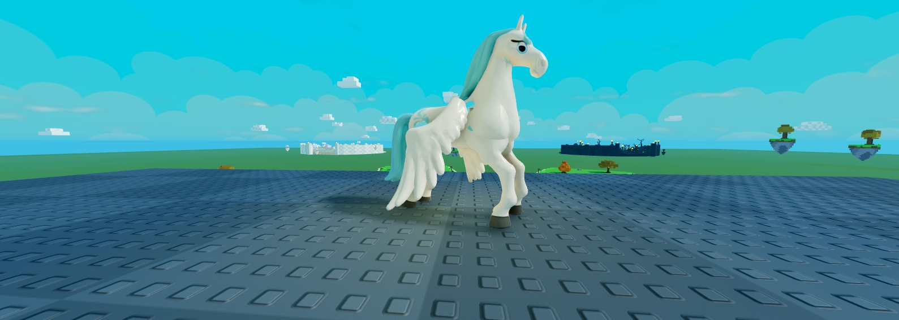
Profil au repos : l'aile part de l'épaule et se couche vers l'arrière
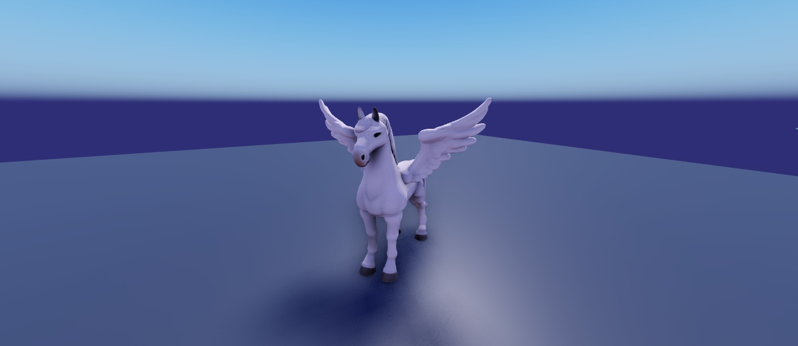
Le pégase de base (avant peinture) avec ses vraies ailes
Encore à reprendre : quelques petites taches de peinture (épaule du Pégase, point sur le Pégase d'Or), et le Pégase des Nuages trop petit en jeu.
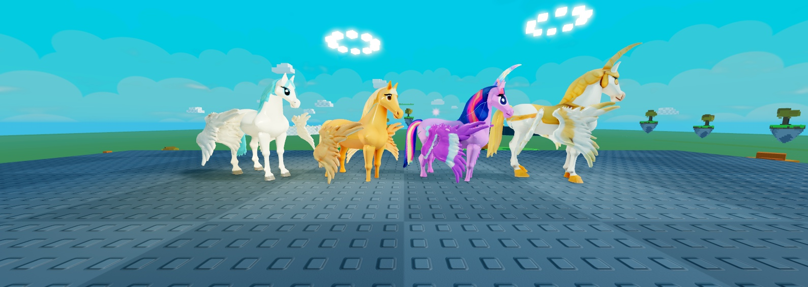
Pégase · Pégase d'Or · Alicorne · Licorne Divine, en jeu, ailes au repos (repliées le long du corps)
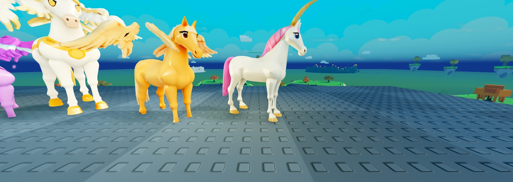
En jeu : Licorne, Pégase d'Or, Licorne Divine. Pelage uniforme, plus de jointures.
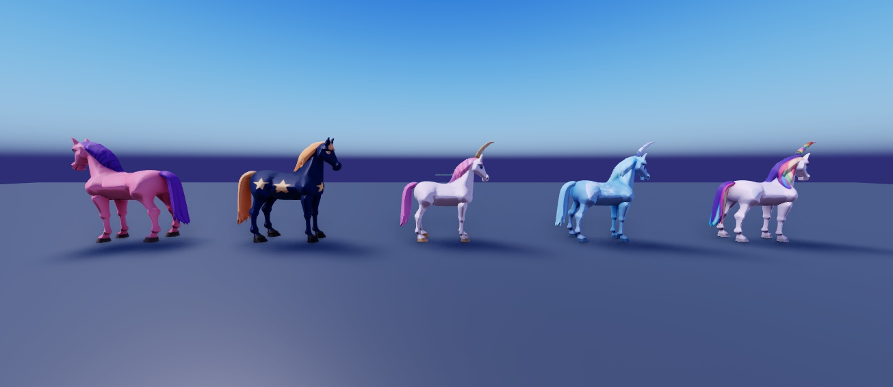
Poney · Poney Étoilé · Licorne · Licorne de Glace · Licorne Arc-en-ciel (plus de « symbole » sur la croupe)
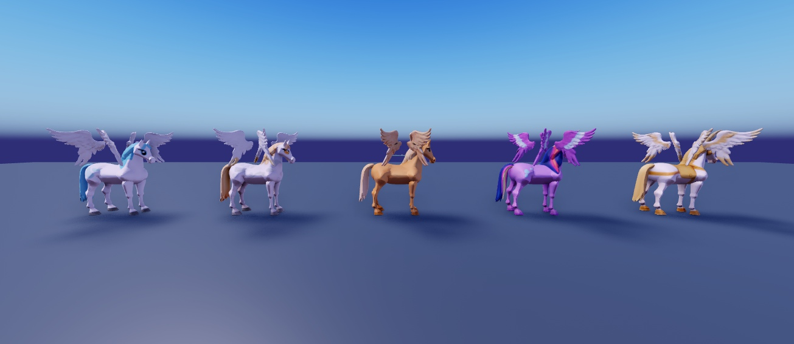
Pégase · Pégase des Nuages · Pégase d'Or · Alicorne · Licorne Divine : ailes déployées (pose de base)
Toutes les créatures ailées (pégases, griffons, dragons, oiseaux, chauves-souris…) replient leurs ailes quand elles sont posées ou qu'elles marchent : vers le bas et vers l'arrière, le long du corps. Elles les entrouvrent quand elles courent, ont un petit frémissement de temps en temps, et les déploient pour voler.
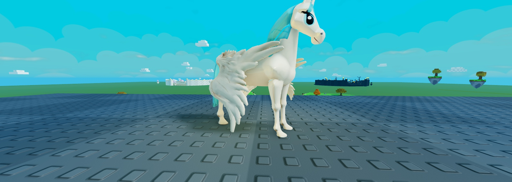
Au repos : ailes repliées le long du flanc
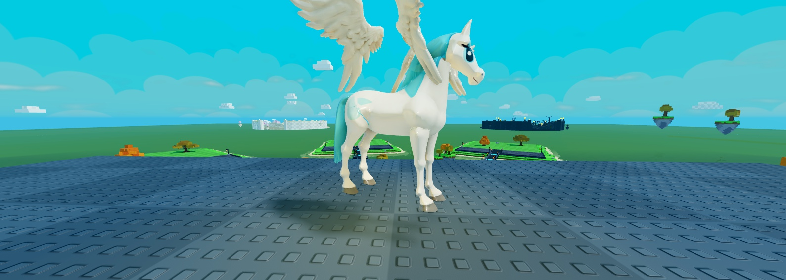
En vol : ailes ouvertes, battements
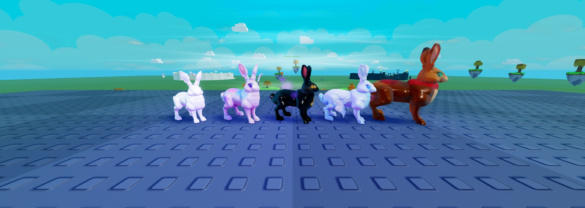
Lapin · Lapin-Licorne · Lapin Lunaire (noir, lune jaune) · Lapin Ailé · Lapin Farceur (bandana) : même corps, pelage uniforme
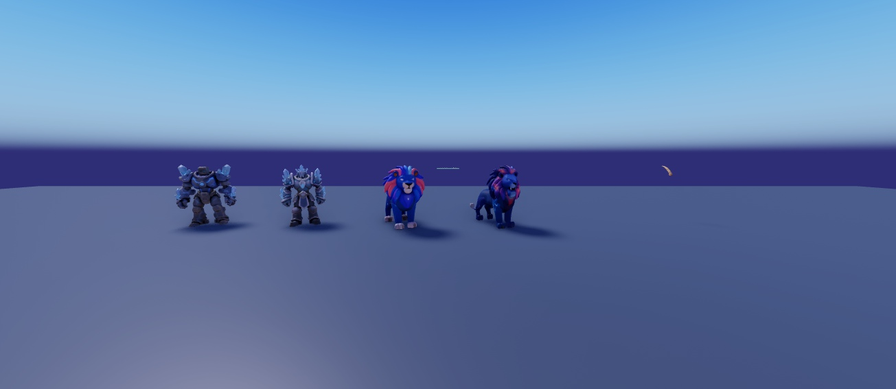
De gauche à droite : Golem 1 · Golem 2 (2 bras, gros cristaux, jambes de la même couleur) · Lion 1 · Lion 2 (plus d'anneau)
| Point | État |
|---|---|
| Yeux des chevaux | Mieux qu'avant mais encore un peu « dessin animé » (cils) : l'outil de peinture a du mal avec les yeux. Dis-moi si ça passe. |
| Corne de la Licorne | Un peu trop longue en jeu : je la raccourcis. |
| Dragon Ancien | Toujours en attente de ton choix : 1 tête plus imposante, ou 3 têtes assemblées par moi. |
| Hibou, Ours, Sphinx, Ours Polaire, Scarabée, Prisme, Griffon, Loup | Versions de la dernière fois (yeux refaits), à confirmer. |